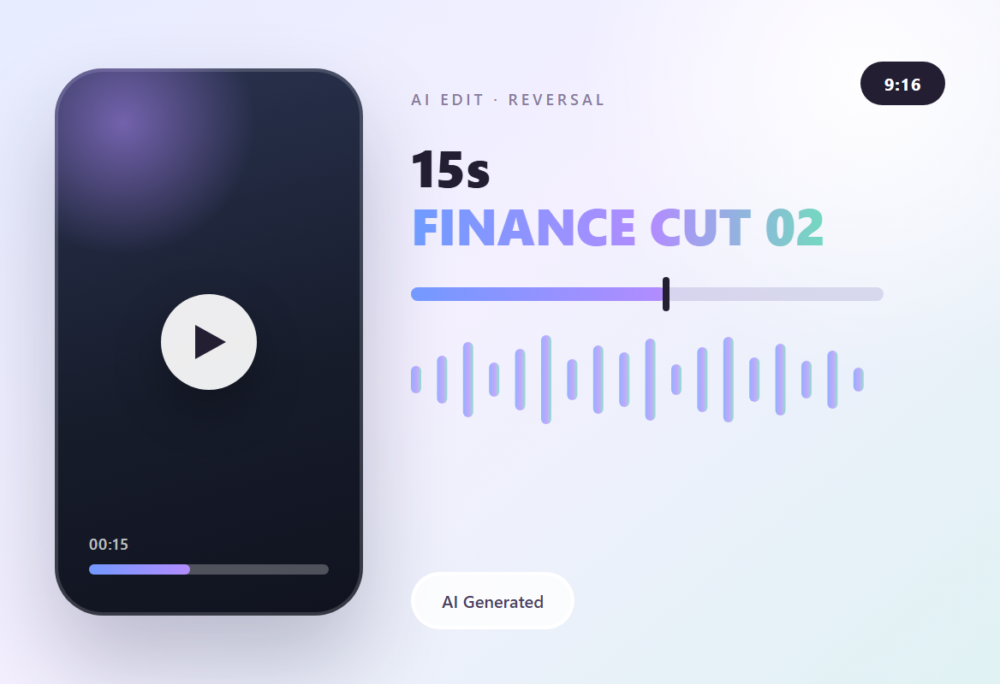

AI 剪辑 · 营销视频 · 金融类型 2
这条片子用一个小麻烦开场：手机摔坏了，修不起。把借款流程当成「解药」，最后 3 秒才落到下载。15 秒切成四段，成片就放在本页。
主视觉

项目背景
15 秒 · 9:16 · 麻烦开场
开场 3 秒是一块摔裂的手机屏：麻烦必须先发生，短片才有出现的理由。
这类片子不解释产品，只解决眼前的麻烦 —— 修手机要钱，手头没有，三步借到。因果链只有一条，观众不用记任何信息。
剪辑策略
先麻烦，后解药
- 0–3 秒只拍麻烦：碎裂的屏幕加一句「Siempre surge…」，品牌先不出现。
- 4–10 秒切到 App：启动页 → 填资料 → 验证身份，全部用竖屏手机实拍视角，手指始终在画面里。
- 11–15 秒给出「问题解决了」的表情，再把「Descarga ahora」放在最后一屏，行动指令落在情绪最高处。
制作流程
定钩子 → 生成 → 粗剪 → 收尾
-
定钩子
先写死「手机摔坏」这个具体麻烦，再倒推流程里要露哪几步。
-
AI 生成
人物、碎屏、App 界面分三组提示词生成，色调统一到暖灰，避免拼贴感。
-
粗剪
15 秒塞进四个段落，切点对齐鼓点，转场只用硬切和轻推。
-
收尾
字幕压在画面下方 1/5；AI 生成的字形偶尔会糊，成片里保留了这处瑕疵，但没让它压到关键信息。
成片
720 × 1280 · 15 秒